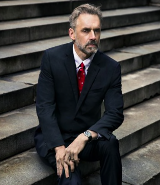

Патриархата не существует». Как психолог Джордан Питерсон заработал миллионы на защите мужчин и лобстерах

Идею о том, что «патриархата не существует», недавно высказал фигурант «московского дела» Егор Жуков, что моментально вызвало гнев феминисток. Первоисточником оказался Джордан Питерсон, одиозный канадский психолог с 135 млн подписчиков в Твиттере и 2,5 млн — в YouTube. Мы решили разобраться, как специалист с такими спорными взглядами стал настолько популярным — и заработал миллионы
- «У мужчин и женщин гораздо больше общего, чем разного»
- «У всех в мире должны быть равные возможности»
- «Долгосрочные отношения нельзя построить на доминировании».
Эти цитаты тоже принадлежат Джордану Питерсону — человеку, которого называют женоненавистником, анти-феминистом, хранителем патриархата и проповедником маскулинности. И который сам характеризует себя как «классического британского либерала». Как же так получилось? Как всегда, дьявол кроется в деталях.
Кто такой Джордан Питерсон
«Патриархата не существует», — сказал студент-политолог ВШЭ Егор Жуков в
своем первом интервью после
освобождения из зала суда (Егора как фигуранта «московского дела» осудили за призывы к экстремизму и дали
три года условно). Жуков не сам пришел к такому спорному выводу — в разговоре с журналистом он
ссылался на
одного из самых популярных и противоречивых спикеров современности Джордана Питерсона. До сих пор в России
Питерсон оставался скорее нишевым персонажем, известным по своим громким высказываниям про принудительную
моногамию и невозможность полного равенства мужчин и женщин. На феминистских ресурсах его уничижали и
разоблачали, в мизогинистских сообществах — боготворили. Но Жуков — как новый герой либеральной России —
вывел фигуру Питерсона из тени и заставил многих поближе познакомиться с идеями одиозного философа. В
YouTube можно найти целый канал с переведенными лекциями психолога, хотя подробных русскоязычных статей о
нем практически нет.
Кто он такой? Почему стал популярным? И главное, что именно он проповедует?
Джордан Питерсон — клинический психолог и профессор психологии из Канады, участник сообщества Intellectual
Dark Web (можно перевести как «темные интеллектуалы» или «подпольное движение интеллектуалов», в котором
также числятся нейробиолог Сэм Харрис, комедиант Джо Роган, политический комментатор Дэйв Рубин, активистка
Айаан Хирси Али и другие участники преимущественно из академической среды). Он продвигает традиционные
ценности, ратует за сохранение института брака, выступает против политкорректности и постмодернистской
идеологии, в которой все относительно и потому неоднозначно.
Идеи Питерсона находят неожиданно большой отклик у казалось бы демократически настроенного западного
общества — у Джордана больше миллиона подписчиков в Instagram, 135 млн — в Twitter, 700 тысяч — в Facebook и
2,4 миллиона — в YouTube. Суммарно его видео-лекции посмотрело больше 120 млн человек. Его книга по
самопомощи «12 правил жизни. Противоядие от хаоса» разошлась миллионными тиражами и до сих пор отлично
продается — каждую неделю ее покупают десятки тысяч человек по всему миру (в России она вышла в 2019 году в
издательстве «Питер»). На всем этом Питерсон неплохо зарабатывает — по состоянию на конец 2018-го порядка
$600 тысяч в месяц. Одно его выступление стоит $50 тысяч, продажи книг приносят около $120 тысяч в месяц,
еще $200 с лишним тысяч Джордан зарабатывает на бизнесе (продажа писательских и других обучающих
онлайн-курсов, а также фирменного мерча — толстовок, постеров, подушек и так далее). Раньше Питерсон вел
платный блог на платформе Patreon — за его контент подписчики суммарно платили до $80 тысяч в месяц, что
делало Джордана одним из самых популярных блогеров сервиса. Сейчас он закрыл блог и сел писать продолжение
«12 правил жизни» — своего главного бестселлера, сборника житейских мудростей с легким патриархальным
уклоном и заранее распределенными ролями для мужчины и женщины.
Свобода слова и разгневанные мужчины
Любопытно, что сам Питерсон не считает свои идеи патриархальными
и более того — отрицает
патриархат как таковой. В знаменитом интервью журналистке Хелен Льюис для британского GQ (ролик набрал на
YouTube более 10 млн просмотров и многократно цитировался) он сначала отверг определение патриархата как
формы общества, в котором мужчины доминируют над женщинами, а после усомнился, что такое доминирование
вообще имело и имеет место быть: «[Когда вы говорите о том, что большинством капитала и богатств владеют
мужчины], вы говорите о крошечном проценте людей. Большинство заключенных в тюрьмах — это тоже мужчины.
Большинство бездомных людей — мужчины. Большинство жертв жестоких преступлений, людей, совершающих суицид и
погибающих на войнах — мужчины. Где здесь доминирование?». Именно эту речь почти дословно процитировал в
своем интервью Егор Жуков, когда его спросили о феминизме.
Смотреть интервью Питерсона интересно — он опытный спорщик, да еще и психолог, поэтому неплохо умеет
отражать атаки журналистов. Самый известный пример — его интервью с британской журналисткой Кэти Ньюман. Они
обсуждали момент в биографии Питерсона, который и принес ему первую славу: в 2016 году он опубликовал на
своем канале серию видео с критикой канадского законопроекта С-16. Новый закон запрещал дискриминировать и
разжигать ненависть к людям на основе их гендерной идентичности. В том числе, предписывал использование
особых местоимений по отношению к трансгендерам. В этом Джордан увидел угрозу свободе слова, когда
государство обязывает использовать «новояз» (местоимения zhe и zher) и вводит уголовную ответственность за
какие-то высказывания.
Его ролики про надвигающийся тоталитарный режим быстро стали вирусными, а сам Питерсон превратился в нового
героя правых — последующие рассуждения профессора о роли мужчин и женщин, маскулинности и семейных ценностях
еще больше воодушевили и расширили его консервативную аудиторию. Во время интервью Ньюман вспомнила этот
эпизод и спросила: «Почему вы считаете, что ваше право на свободу слова должно превосходить право
трансгендеров не быть оскорбленными?». На что психолог ответил: «Чтобы быть способным думать, нужно быть
готовым к тому, что можно кого-то оскорбить. Взять к примеру это интервью. Вы готовы оскорблять, чтобы
добиться правды. Почему у вас должно быть право так себя вести? Мне это неприятно. Но вы делаете то, что
должны. Вы пытаетесь докопаться до сути и реализуете свое право на свободу слова, несмотря на риск оскорбить
меня». Этот момент, да и вообще все получасовое интервью поклонники Питерсона разобрали на цитаты — в
интернете даже можно найти основанные на них обучающие ролики для начинающих полемистов.